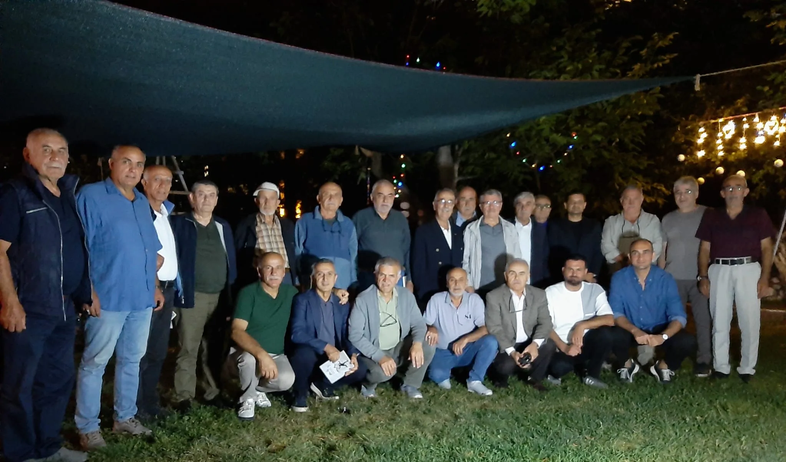
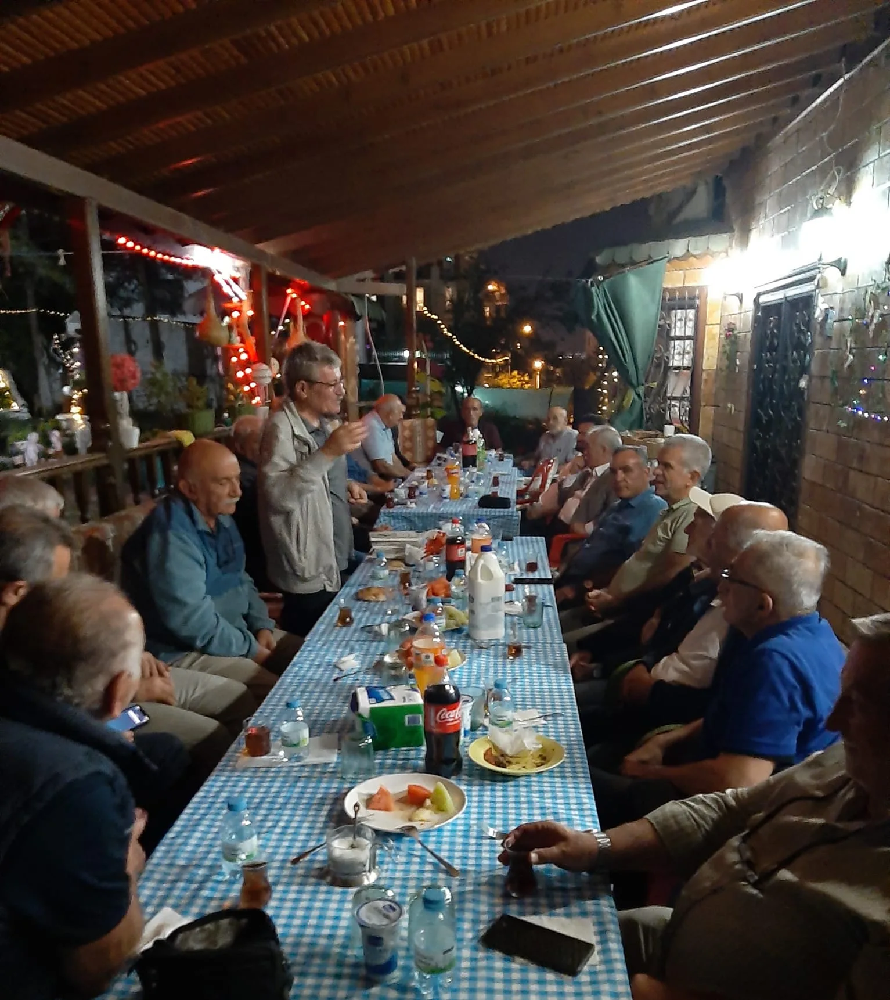

Mütevelli Heyetimiz ve Yönetim Kurulumuz Dönem Planlaması İçin Bir Araya Geldi
Vakfımızın mütevelli heyeti ve dernek yönetim kurulu üyeleri, Başkanımız Dr. Reşat Doğru ile bir araya gelerek yeni döneme ilişkin çalışma ve faaliyet planlarını değerlendirdi.
Haberi ve fotoğrafları görüntüle
Vakfımızın mütevelli heyeti ve dernek yönetim kurulu üyeleri, Başkanımız Dr. Reşat Doğru’nun katılımıyla gerçekleştirilen toplantıda bir araya geldi.
Toplantıda geride kalan dönemin çalışmaları değerlendirilirken, yeni dönemde hayata geçirilmesi planlanan eğitim, sağlık ve sosyal sorumluluk faaliyetleri ele alındı. Vakfımızın topluma sunduğu katkının güçlendirilmesi ve çalışmaların daha geniş kitlelere ulaştırılması amacıyla görüş alışverişinde bulunuldu.
Ortak akıl ve iş birliği anlayışıyla şekillenen toplantı, yeni dönem hedeflerinin ve öncelikli çalışma alanlarının belirlenmesiyle sona erdi.
